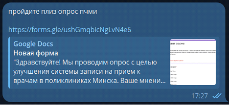
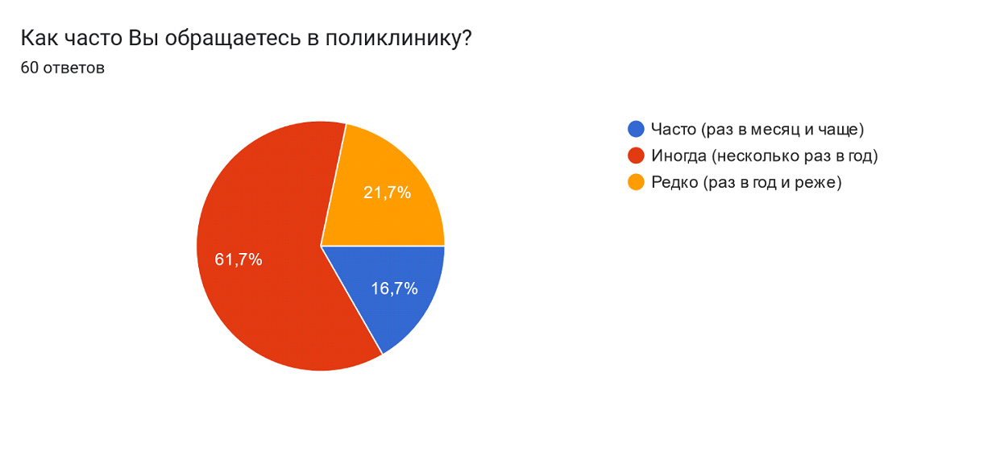
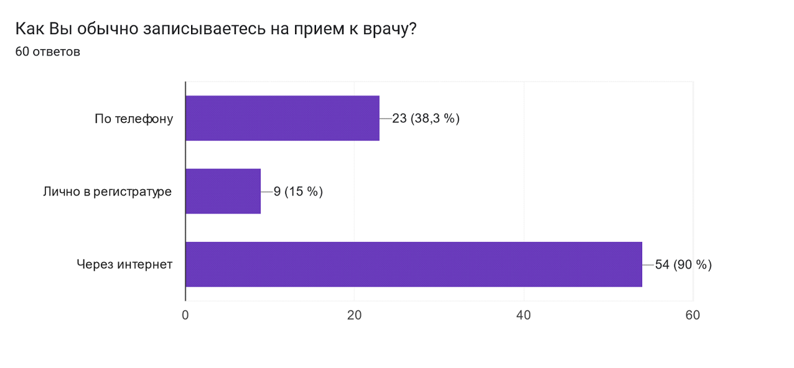
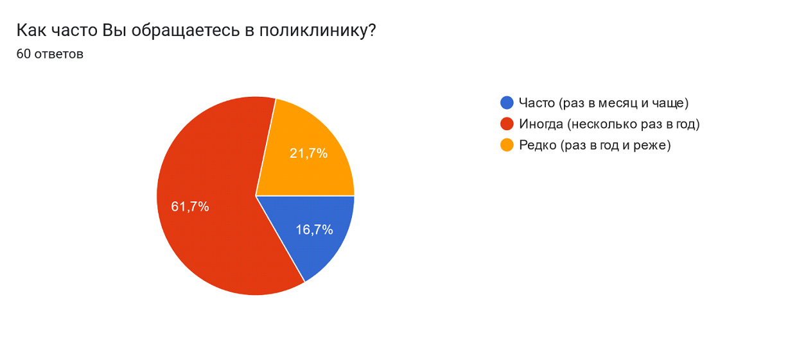
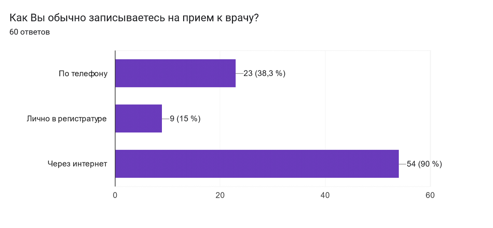
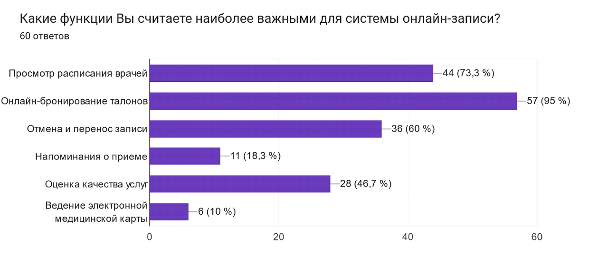
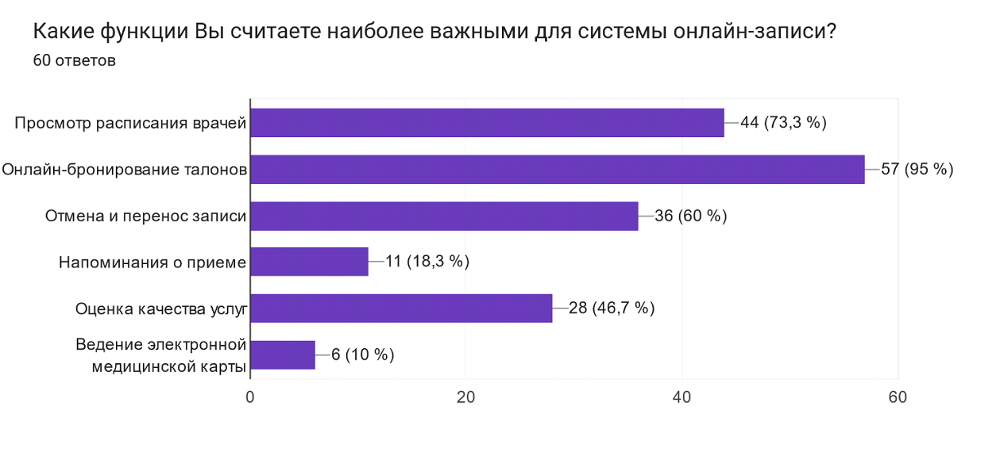
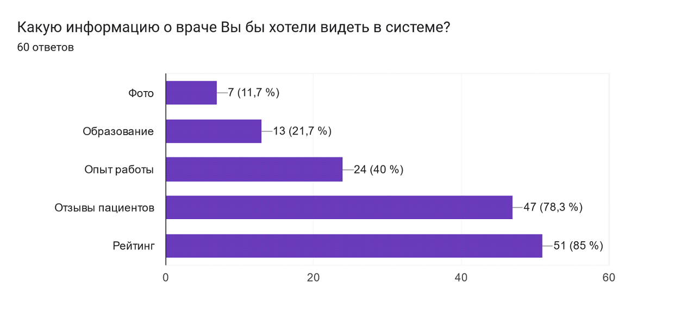
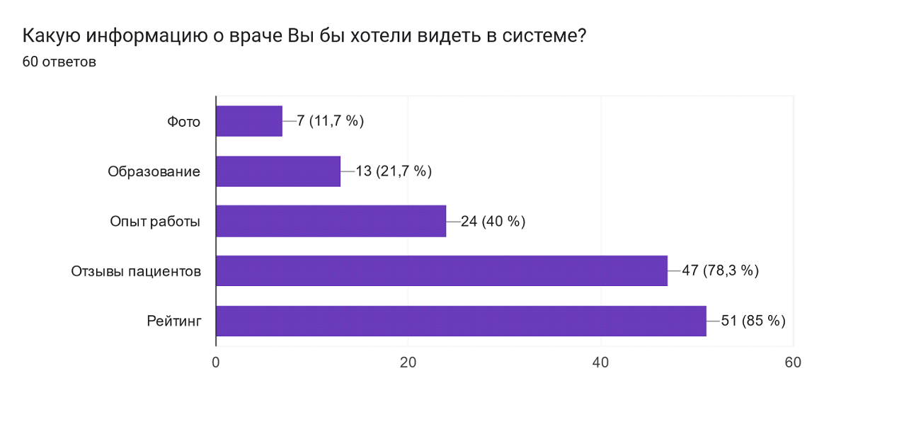

Название и цели лабораторной работы 1
Цели работы:
- Изучить основные принципы и методы проектирования человеко-машинных интерфейсов
- Освоить практические навыки проведения исследования пользователей и предметной области
- Проанализировать существующие решения и выявить проблемы в области онлайн-записи к врачу
- Разработать профили пользователей, задач и среды, чтобы понять потребности и контекст использования системы
- Создать персонажи и сценарии взаимодействия с системой, чтобы продемонстрировать пользовательский путь и необходимый функционал
- Спроектировать объектную модель системы, определить ее основные компоненты и связи между ними
- Разработать стратегию дизайна, которая учтет интересы всех заинтересованных сторон
- Описать текущие бизнес-процессы и выявить возможности для их оптимизации
В результате выполнения работы студент должен:
- Понимать основные принципы человеко-центрированного дизайна
- Уметь проводить анализ пользователей, задач и среды
- Уметь проектировать объектную модель системы
- Уметь разрабатывать стратегию дизайна
- Уметь описывать бизнес-процессы
- Приобрести практические навыки, необходимые для проектирования удобных и эффективных пользовательских интерфейсов
Выбор темы и постановка задачи
Социальная задача:
Создание удобного и доступного инструмента для записи на прием к врачу в поликлинике, который позволит:
- Сократить время ожидания в очереди за талонами
- Упростить процесс записи на прием для всех категорий граждан, включая пожилых людей и людей с ограниченными возможностями
- Повысить эффективность работы регистратуры и врачей за счет оптимизации потока пациентов
Структура данных
- Информация о пользователях:
- Пациенты: ФИО, дата рождения, пол, адрес, контактные данные, полис ОМС, история посещений.
- Врачи: ФИО, специальность, квалификация, фото, график работы, доступные временные слоты для записи.
- Регистраторы: ФИО, контактные данные, права доступа.
- Информация о поликлинике:
- Отделения: наименование, список врачей, график работы.
- Кабинеты: номер, отделение, врач.
- Информация о талонах:
- Дата и время приема.
- Врач.
- Специальность.
- Пациент.
- Статус (забронирован, доступен, отменен).
Структура деятельности
- Основные сценарии использования:
- Для пациентов:
- Поиск врача по специальности, ФИО, отделению
- Просмотр графика работы врача и доступных временных слотов
- Запись на прием онлайн с выбором даты и времени
- Отмена записи
- Просмотр истории своих записей
- Оценка качества оказанных услуг
- Получение уведомлений о предстоящих приемах
- Для врачей:
- Просмотр графика работы и списка записанных пациентов
- Внесение результатов приема в электронную медицинскую карту пациента
- Для регистраторов:
- Добавление, редактирование и удаление информации о врачах, отделениях, кабинетах
- Управление очередью и вызов пациентов на прием
- Формирование отчетов
- Дополнительные функции:
- Интеграция с электронной медицинской картой
- Возможность вызова врача на дом
- Онлайн-консультации с врачами
Требования к проектированию физической инфраструктуры
- Мобильное приложение:
- Должно быть доступно на платформах Android и iOS
- Обеспечивать быструю и удобную навигацию
- Иметь простой и понятный интерфейс
- Работать в условиях ограниченного интернет-соединения
- Использовать push-уведомления для информирования о записи и ее изменениях
- Веб-приложение:
- Адаптивный дизайн для корректного отображения на различных устройствах
- Высокая скорость загрузки страниц
- Интеграция с платежными системами (для платных услуг, например, онлайн-консультаций)
- Высокий уровень безопасности данных пользователей
Анализ конкурентов
Список конкурентов:
- TALON.BY: крупнейший портал Беларуси по онлайн-записи к врачам. Охватывает большинство государственных и частных поликлиник Минска
- 131.by: сервис онлайн-записи к врачам от Министерства здравоохранения Республики Беларусь, доступен в Минске
- doctora.by: платформа онлайн-записи к врачам в частных медицинских центрах Минска
- infodoktor.by: сервис поиска врачей и записи на прием в Минске, преимущественно частные клиники
- Мобильные приложения отдельных крупных частных медицинских центров (например, "ЛОДЭ", "Синлаб" и др.)
- Горячие линии поликлиник: запись по телефону
- Инфокиоски в поликлиниках: терминалы самообслуживания для записи на прием
- DocPlanner (ZnanyLekarz): международная платформа поиска врачей и записи на прием, представлена в Беларуси
- Сервисы онлайн-консультаций: Яндекс.Здоровье, СберЗдоровье (не предоставляют запись в гос. поликлиники, но являются альтернативой очному посещению)
Объем трафика и динамика развития:
- TALON.BY: лидер по трафику, стабильно высокий
- 131.by: имеет потенциал роста, так как поддерживается государством, но пока уступает по трафику TALON.BY
- doctora.by, infodoktor.by: обладают меньшим объемом трафика, ориентированы на сегмент частных клиник
- Приложения отдельных мед.центров: трафик ограничен пациентами конкретной клиники
- Горячие линии, инфокиоски: данные по трафику недоступны, но можно предположить, что ими пользуются люди, не имеющие доступа к онлайн-сервисам
Региональная популярность платформ:
- Веб-сайты: основной канал для TALON.BY, 131.by, doctora.by, infodoktor.by
- Мобильные приложения: активно развиваются TALON.BY, doctora.by, а также частными клиниками
- Социальные сети: используются для продвижения и информирования, но не для записи на прием
- Контекстная реклама: применяется всеми онлайн-сервисами
Потребительский портрет клиентов:
- TALON.BY, 131.by: широкая аудитория, разные возрастные группы, ищут удобства и экономию времени
- doctora.by, infodoktor.by: ориентированы на пользователей, предпочитающих частные клиники, готовых платить за комфорт и дополнительные услуги
- Приложения мед. центров: лояльные пациенты конкретной клиники, ценят персонализацию и доступ к своим данным
- Горячие линии, инфокиоски: люди старшего возраста, не пользующиеся интернетом, пациенты с низким уровнем цифровой грамотности
Выводы:
- Рынок онлайн-записи к врачам в Минске конкурентен
- Лидерами являются TALON.BY и 131.by, охватывающие большинство государственных и частных клиник
- Наблюдается тенденция развития мобильных приложений
- Важно учитывать потребности различных сегментов аудитории, в том числе с низким уровнем цифровой грамотности
Рекомендации для проектируемой системы:
- Акцент на удобстве и простоте: превзойти конкурентов по удобству использования, скорости работы, интуитивно понятному интерфейсу
- Широкая функциональность: предоставить пользователям больше возможностей, чем просто запись на прием (например, онлайн-консультации, вызов врача на дом, интеграция с электронной медицинской картой)
- Ориентация на мобильные технологии: разработать удобное и функциональное мобильное приложение
- Активное продвижение: использовать различные каналы привлечения пользователей (контекстная реклама, социальные сети, партнерские программы)
Проведение опроса
В опросе Google Forms о системе онлайн-записи к врачу были следующие вопросы:
-
"Ваш возраст"
- Тип вопроса: Выбор из списка (Dropdown)
-
Варианты ответа:
- До 18 лет
- 18-24 года
- 25-34 года
- 35-44 года
- 45-54 года
- 55-64 года
- 65 лет и старше
-
"Ваш пол"
- Тип вопроса: Выбор из списка (Dropdown)
-
Варианты ответа:
- Мужской
- Женский
- Не скажу
- [Открытый вариант для самоидентификации]
-
"Район проживания в Минске"
- Тип вопроса: Выбор из списка (Dropdown)
-
Варианты ответа:
- Центральный
- Советский
- Первомайский
- Партизанский
- Заводской
- Ленинский
- Октябрьский
- Московский
- Фрунзенский
-
"Как часто Вы обращаетесь в поликлинику?"
- Тип вопроса: Выбор из списка (Dropdown)
-
Варианты ответа:
- Часто (раз в месяц и чаще)
- Иногда (несколько раз в год)
- Редко (раз в год и реже)
-
"Как Вы обычно записываетесь на прием к врачу?"
- Тип вопроса: Множественный выбор (Checkboxes)
-
Варианты ответа:
- По телефону
- Лично в регистратуре
- Через интернет
-
"Если Вы записываетесь через интернет, какие сервисы используете?"
- Тип вопроса: Множественный выбор (Checkboxes)
-
Варианты ответа:
- talon.by
- 131.by
- doctora.by
- Сайт поликлиники
- [Открытый вариант для указания других сервисов]
-
"Удовлетворены ли Вы процессом записи на прием к врачу?"
- Тип вопроса: Шкала (Linear Scale)
-
Варианты ответа:
- От 1 (крайне неудовлетворен) до 5 (крайне удовлетворен)
-
"С какими трудностями Вы сталкиваетесь при записи на прием?"
- Тип вопроса: Множественный выбор (Checkboxes)
-
Варианты ответа:
- Трудно дозвониться в регистратуру
- Нет свободных талонов
- Неудобный график работы врачей
- Сложно найти нужную информацию на сайте
- [Открытый вариант для описания других трудностей]
-
"Что бы Вы хотели улучшить в процессе записи на прием к врачу?"
- Тип вопроса: Короткий ответ (Short answer)
-
Варианты ответа:
-
"Какие функции Вы считаете наиболее важными для системы онлайн-записи?"
- Тип вопроса: Множественный выбор (Checkboxes)
-
Варианты ответа:
- Просмотр расписания врачей
- Онлайн-бронирование талонов
- Отмена и перенос записи
- Напоминания о приеме
- Оценка качества услуг
- Ведение электронной медицинской карты
- [Открытый вариант для указания других функций]
-
"Каким устройством Вам было бы удобнее пользоваться для записи на прием?"
- Тип вопроса: Выбор из списка (Dropdown).
-
Варианты ответа:
-
"Готовы ли Вы использовать мобильное приложение для записи на прием к врачу?"
- Тип вопроса: Выбор из списка (Dropdown)
-
Варианты ответа:
-
"Какую информацию о враче Вы бы хотели видеть в системе?"
- Тип вопроса: Множественный выбор (Checkboxes)
-
Варианты ответа:
- Образование
- Опыт работы
- Отзывы пациентов
- Рейтинг
- Фото
- [Открытый вариант для указания другой информации]
-
"Что бы Вас привлекло в использовании новой системы онлайн-записи?"
- Тип вопроса: Короткий ответ (Short answer)
-
Варианты ответа:
Распространение ссылки на опросник

Результаты опроса


 




 

 

Анализ результатов опроса по системе онлайн-записи в поликлинику
Общая картина:
Проблемы текущих решений:
- Дефицит талонов: ключевая проблема, вызывающая недовольство
- Неудобный график работы врачей: ограничивает возможности записи
- Сложности с навигацией и поиском информации: на сайтах поликлиник
- Отсутствие некоторых востребованных функций: онлайн-отмена, уведомления, отзывы о врачах
Портрет пользователя:
- "Продвинутый": молодежь, активно использует интернет и мобильные приложения, ожидает широкий функционал, ценит удобство и скорость
- "Осторожный": средний возраст, использует интернет, но предпочитает проверенные ресурсы (talon.by, сайт поликлиники), ожидает надежности и простоты
- "Консервативный": старшее поколение, ограниченно использует интернет, предпочитает телефон или личный визит, нуждается в простом и понятном интерфейсе
Рекомендации для проектируемой системы:
- Решить проблему доступности талонов: внедрить систему динамического распределения слотов, электронную очередь, запись на конкретное время
- Обеспечить удобный график: предусмотреть возможность записи в вечернее время, выходные дни
- Разработать интуитивно понятный интерфейс: простой поиск, фильтры, понятная структура меню
- Сделать акцент на мобильную версию: удобное приложение с push-уведомлениями, интеграцией с календарем
- Предоставить расширенную информацию о врачах: образование, опыт, отзывы, рейтинг
- Реализовать востребованные функции: онлайн-отмена, напоминания, оценка качества услуг, интеграция с электронной мед. картой
Дополнительные возможности:
- Онлайн-консультации: востребованная услуга, особенно в условиях пандемии
- Геолокация: поможет найти ближайшую поликлинику или врача
- Чат-бот: автоматизирует ответы на часто задаваемые вопросы
Выводы:
Результаты опроса подтверждают актуальность разработки удобной и функциональной системы онлайн-записи в поликлиники
Важно:
- Уделить особое внимание потребностям разных категорий пользователей
- Обеспечить высокий уровень безопасности и конфиденциальности данных
- Проводить постоянную работу над улучшением функциональности и удобства системы
Анализ данных
Объединив данные анализа конкурентов и результатов опроса, мы получаем более полное представление о потребностях пользователей и условиях использования будущей системы онлайн-записи в поликлинику
Ключевые проблемы:
- Сложности с записью
- Нехватка информации
Потребности пользователей:
- Удобство и скорость
- Доступность информации
- Гибкость и контроль
Задачи пользователей:
- Найти нужного врача: поиск по специальности, ФИО, району, рейтингу, отзывам
- Записаться на прием: выбрать удобную дату и время, подтвердить запись
- Управлять записью: отменить или перенести запись, получить напоминание
- Получить информацию: о враче, процедуре приема, подготовке к визиту
- Оценить качество услуг: оставить отзыв о враче, поделиться опытом
Контекст использования:
- Место: дома, на работе, в дороге (с помощью смартфона)
- Время: в любое удобное время, в том числе вечером и в выходные
- Эмоциональное состояние: может быть разным: от спокойного планирования до срочной необходимости найти врача.
Сегментация пользователей:
- "Цифровые" пациенты: активно используют интернет и мобильные технологии, ожидают удобства, скорости и широкого функционала
- "Традиционные" пациенты: предпочитают привычные каналы (телефон, личный визит), нуждаются в простом и понятном интерфейсе, помощи с навигацией
Выводы:
Новая система должна быть
- Удобной и интуитивно понятной для всех категорий пользователей
- Функциональной: предоставлять все необходимые функции для записи, управления и получения информации
- Доступной: работать на разных устройствах, в том числе на смартфонах, с учетом возможных ограничений интернет-соединения
- Информативной: предоставлять пользователям полную информацию о врачах, услугах и процессе записи
Важные моменты:
- Проектировать интерфейс с учетом особенностей каждого сегмента пользователей
- Обеспечить высокий уровень безопасности данных
- Интегрировать систему с электронной медицинской картой для удобства пациентов и врачей
Данный анализ поможет сфокусироваться на ключевых потребностях пользователей и создать систему, которая будет востребованной и эффективной
Разработка профилей
"Цифровой пациент"
- Социально-демографические характеристики: возраст 18-45 лет, активный пользователь интернета и мобильных технологий, проживает в Минске
- Навыки работы с компьютером: уверенный пользователь, владеет компьютером, смартфоном, использует различные приложения и сервисы
- Мотивационно-целевая среда: ценит свое время, комфорт и удобство. Предпочитает решать задачи онлайн, не тратя время на звонки и визиты
- Рабочая среда: работает в офисе или удаленно, имеет доступ к компьютеру и интернету в течение дня
- Особенности взаимодействия: использует мобильное приложение для записи, ожидает быстрой работы, понятного интерфейса, интерактивных функций (онлайн-отмена, уведомления, геолокация).
"Традиционный пациент"
- Социально-демографические характеристики: возраст 45+ лет, ограниченный опыт использования интернета, может проживать как в Минске, так и в пригороде
- Навыки работы с компьютером: пользователь начального уровня, использует компьютер для простых задач (поиск информации, общение в мессенджерах)
- Мотивационно-целевая среда: предпочитает привычные способы записи (телефон, личный визит), может испытывать сложности с онлайн-сервисами
- Рабочая среда: может быть пенсионером, работать на производстве, в сфере обслуживания. Доступ к компьютеру и интернету может быть ограничен
- Особенности взаимодействия: использует веб-сайт, предпочитает простой интерфейс, крупные шрифты, минимум действий для записи. Нуждается в подсказках и инструкциях
"Заботливый родитель"
- Социально-демографические характеристики: возраст 25-45 лет, родитель ребенка, активно использует интернет и мобильные приложения для решения различных задач (покупки, общение, развлечения)
- Навыки работы с компьютером: уверенный пользователь, быстро осваивает новые приложения и сервисы
- Мотивационно-целевая среда: стремится обеспечить ребенку качественную медицинскую помощь, ценит время и удобство, ищет надежную информацию
- Рабочая среда: может работать как в офисе, так и удаленно, имеет доступ к компьютеру и интернету в течение дня
- Особенности взаимодействия: использует мобильное приложение, ищет удобный функционал для записи ребенка (возможность прикрепить данные полиса, добавить несколько профилей детей, получать напоминания)
"Пациент с ограниченными возможностями"
- Социально-демографические характеристики: любая возрастная группа, имеет особенности здоровья, которые могут ограничивать взаимодействие с компьютером
- Навыки работы с компьютером: могут быть разными, в зависимости от типа ограничений
- Мотивационно-целевая среда: нуждается в доступном и удобном способе записи на прием
- Рабочая среда: может быть разной, в зависимости от типа ограничений
- Особенности взаимодействия: требует специальных функций accessibility (крупные шрифты, контрастные цвета, озвучивание текста, управление с помощью клавиатуры или голосовых команд)
Важно:
- При проектировании системы необходимо учитывать потребности всех категорий пользователей, обеспечивая удобство и доступность для каждого
- Проводить тестирование приложения с представителями разных групп пользователей для получения обратной связи и улучшения системы
Профили задач пользователей системы онлайн-записи к врачу
Поиск и выбор врача
- Вид деятельности: Поиск информации о врачах и выбор подходящего специалиста
- Структура деятельности: Определение потребности; Поиск врача; Просмотр профиля врача; Сравнение врачей; Выбор врача
- Задачи: Поиск врача по специализации, ФИО, району, рейтингу; Просмотр профиля врача; Сравнение профилей нескольких врачей
- Связи между пользователями и задачами: все пользователи
Запись на прием
- Вид деятельности: Бронирование временного слота для посещения врача
- Структура деятельности: Выбор даты и времени; Ввод данных пациента; Подтверждение записи
- Задачи: Просмотр графика работы врача; Выбор доступной даты и времени; Ввод/загрузка данных пациента; Подтверждение записи
- Связи между пользователями и задачами: все пользователи
Управление записью
- Вид деятельности: Изменение или отмена забронированного временного слота
- Структура деятельности: Просмотр своих записей; Выбор записи; Отмена записи; Перенос записи
- Задачи: Просмотр своих записей; Отмена записи; Перенос записи
- Связи между пользователями и задачами: все пользователи
Получение информации
- Вид деятельности: Поиск и получение информации о врачах, услугах, поликлинике
- Структура деятельности: Определение информационной потребности; Поиск информации; Изучение информации
- Задачи: Поиск информации о врачах (образование, опыт, отзывы); Получение информации о услугах поликлиники (анализы, процедуры); Просмотр контактных данных поликлиники, схемы проезда; Чтение новостей, объявлений
- Связи между пользователями и задачами: все пользователи
Оценка качества услуг
- Вид деятельности: Оставление отзыва о враче, оценка качества оказанных услуг
- Структура деятельности: Выбор врача; Оценка качества услуг; Публикация отзыва
- Задачи: Оставить отзыв о враче; Оценить качество услуг по шкале
- Связи между пользователями и задачами: все пользователи, кроме "Традиционного пациента" (может не оставлять отзывы онлайн)
Профили среды для системы онлайн-записи к врачу
Домашняя среда
- Место использования: дома, в квартире, в комфортной обстановке
- Рабочее место: диван, кресло, стол
- Программное обеспечение: Windows, macOS, Android, iOS
- Аппаратное обеспечение: персональный компьютер, ноутбук, планшет, смартфон
- Прерывания: возможны (члены семьи, домашние животные, бытовые задачи)
- Освещенность: хорошая, естественное или искусственное освещение
- Шумность: низкая или умеренная
Рабочая среда
- Место использования: офис, рабочее место
- Рабочее место: стол, офисный стул
- Программное обеспечение: Windows, macOS, корпоративные приложения
- Аппаратное обеспечение: рабочий компьютер, ноутбук
- Прерывания: частые (звонки, коллеги, задачи)
- Освещенность: обычно хорошая, искусственное освещение
- Шумность: может быть высокой (офисный шум, разговоры)
Мобильная среда
- Место использования: в дороге, общественный транспорт, улица
- Рабочее место: отсутствует
- Программное обеспечение: Android, iOS
- Аппаратное обеспечение: смартфон
- Прерывания: возможны (звонки, сообщения, окружающие люди, движение)
- Освещенность: может быть разной, в том числе низкой (вечер, пасмурная погода)
- Шумность: может быть высокой (уличный шум, транспорт)
Среда с ограниченным доступом к технологиям
- Место использования: дома, библиотека, общественные места с доступом к компьютеру
- Рабочее место: компьютер, стол
- Программное обеспечение: Windows, macOS, возможно устаревшее ПО
- Аппаратное обеспечение: стационарный компьютер, возможно с ограниченными возможностями (низкая скорость работы, маленький экран)
- Прерывания: возможны (другие пользователи компьютера, очереди)
- Освещенность: может быть разной
- Шумность: может быть разной (в зависимости от места использования)
Профили групп пользователей системы онлайн-записи к врачу
Объединив информацию о профилях пользователей, задач и среды, можно выделить следующие группы пользователей
"Активный пользователь"
- Профиль пользователя: "Цифровой пациент" и "Заботливый родитель"
- Профиль задач: Поиск и выбор врача, запись на прием, управление записью, получение информации, оценка качества услуг
- Профиль среды: Домашняя среда, рабочая среда, мобильная среда
- Особенности: Часто пользуются системой для записи себя и членов семьи; Ожидают удобства, скорости, широкого функционала и доступности информации; Активно используют мобильное приложение; Готовы оставлять отзывы и оценки
- Приоритеты: Интуитивно понятный интерфейс; Быстрый и удобный процесс записи; Подробная информация о врачах и услугах; Мобильность и доступность в любое время
"Осторожный пользователь"
- Профиль пользователя: "Традиционный пациент" с некоторыми навыками работы с компьютером
- Профиль задач: Запись на прием, получение информации. Возможно, управление записью (отмена)
- Профиль среды: Домашняя среда, среда с ограниченным доступом к технологиям
- Особенности: Используют систему преимущественно для записи на прием; Предпочитают простые решения, нуждаются в помощи с навигацией; Чаще используют веб-сайт, чем мобильное приложение
- Приоритеты: Простой и понятный интерфейс; Четкие инструкции; Доступность по телефону или в регистратуре
"Пользователь с ограниченными возможностями"
- Профиль пользователя: "Пациент с ограниченными возможностями"
- Профиль задач: Все профили задач, в зависимости от типа ограничений
- Профиль среды: Все профили среды, в зависимости от типа ограничений
- Особенности: Нуждаются в специальных функциях accessibility для комфортного использования системы
- Приоритеты: Доступность интерфейса (крупные шрифты, контрастные цвета, озвучивание текста, управление с помощью клавиатуры или голосовых команд); Альтернативные способы записи (по телефону, через помощника)
Дополнительные группы
- "Администратор системы": отвечает за управление системой, добавление информации о врачах, расписании, услугах
- "Медицинский персонал": использует систему для просмотра своего графика, списка пациентов, внесения информации о приеме
Создание персонажей
Ключевые персонажи
Ольга, 32 года (Цифровой пациент)
- Фото: Фотография молодой женщины, работающей за ноутбуком в кафе
- Цели: Быстро и удобно записаться к врачу для себя и своей семьи, получить качественную медицинскую помощь, не тратить время на очереди и звонки
- Социальное положение: Работает маркетологом в IT-компании, замужем, имеет двоих детей
- Описание рабочего процесса: Много работает, часто в командировках, использует мобильные технологии для решения большинства задач
- Описание окружения: Современный офис, комфортная квартира, активно пользуется социальными сетями
- Уровень подготовки: Уверенный пользователь компьютера и смартфона, легко осваивает новые приложения
- Неудовлетворенности: Сложности с поиском свободных талонов, неудобный график работы врачей, отсутствие информации о врачах
- Ожидания: Удобное мобильное приложение с возможностью быстрой записи, напоминаниями о приеме, подробной информацией о врачах и услугах
Иван Петрович, 68 лет (Традиционный пациент)
- Фото: Фотография пожилого мужчины, читающего газету в кресле
- Цели: Записаться к врачу, получить медицинскую помощь, понять, как пользоваться системой онлайн-записи
- Социальное положение: Пенсионер, живет один, имеет хронические заболевания
- Описание рабочего процесса: Ведет размеренный образ жизни, изредка пользуется компьютером для общения с родственниками и поиска информации
- Описание окружения: Старая квартира, не пользуется смартфоном, основной источник информации - телевидение и газеты
- Уровень подготовки: Начальный уровень владения компьютером, нуждается в помощи при работе с онлайн-сервисами
- Неудовлетворенности: Сложный интерфейс сайтов поликлиник, непонятные инструкции, отсутствие возможности записаться по телефону
- Ожидания: Простой и понятный интерфейс, крупные шрифты, возможность получить помощь по телефону
Дополнительный персонаж
Анна, 35 лет (Заботливый родитель)
- Фото: Фотография молодой женщины с ребенком на руках
- Цели: Записать на прием ребенка, найти хорошего педиатра, узнать о возможности вакцинации
- Социальное положение: Работает учителем, замужем, имеет двоих детей
- Описание рабочего процесса: Активно использует интернет для поиска информации и решения бытовых задач
- Описание окружения: Комфортная квартира, пользуется смартфоном, общается в родительских чатах
- Уровень подготовки: Уверенный пользователь компьютера и смартфона, легко ориентируется в онлайн-сервисах
- Неудовлетворенности: Отсутствие информации о детских врачах, невозможность прикрепить данные полиса ребенка
- Ожидания: Удобное мобильное приложение с профилями детей, напоминаниями о приеме, информацией о вакцинации
Вспомогательный персонаж
Светлана Николаевна, 55 лет (Регистратор поликлиники)
- Фото: Фотография женщины средних лет за рабочим столом
- Цели: Помочь пациентам записаться к врачу, обеспечить порядок в регистратуре, справиться с большим потоком пациентов
- Социальное положение: Работает регистратором в поликлинике много лет
- Описание рабочего процесса: Принимает звонки, записывает пациентов на прием, выдает талоны, отвечает на вопросы
- Описание окружения: Рабочее место в регистратуре, постоянный шум, многолюдно
- Уровень подготовки: Уверенно владеет компьютером, использует специализированные программы для записи пациентов
- Неудовлетворенности: Большие очереди, нехватка талонов, сложности с работой устаревшей системы записи
- Ожидания: Удобная и функциональная система онлайн-записи, которая позволит сократить очереди, упростить работу регистратуры и повысить удовлетворенность пациентов
Контекстные сценарии персонажей
Ольга, 32 года (Цифровой пациент)
Цель: Записаться к эндокринологу для себя и к педиатру для ребенка
Основной путь:
- Открывает мобильное приложение системы онлайн-записи
- Выбирает специализацию "Эндокринолог", указывает свой район
- Просматривает список врачей, изучает информацию о них (опыт, отзывы, рейтинг)
- Выбирает врача с удобным графиком работы
- Выбирает свободную дату и время, вводит свои данные
- Подтверждает запись, получает уведомление на телефон
- Добавляет профиль ребенка в приложение, повторяет шаги 1-6 для записи к педиатру
Альтернативные пути:
-
Если нет свободных талонов к выбранному врачу, Ольга может:
- Посмотреть график работы других врачей той же специализации
- Выбрать другую дату или время
- Записаться в лист ожидания (если функция доступна)
-
Если Ольга не может найти нужную специализацию в приложении, она может:
- Воспользоваться поиском по ключевым словам (например, "сахарный диабет")
- Обратиться в службу поддержки приложения
Исключения:
- Технические сбои в работе приложения
- Отсутствие интернет-соединения
- Необходимость экстренной медицинской помощи (в этом случае Ольга обратится в скорую помощь или поедет в больницу)
Иван Петрович, 68 лет (Традиционный пациент)
Цель: Записаться к терапевту
Основной путь:
- Звонит в регистратуру поликлиники
- Сообщает регистратору свою фамилию, имя, отчество и желаемую дату и время приема
- Регистратор проверяет наличие свободных талонов и записывает Ивана Петровича на прием
- Иван Петрович получает информацию о дате и времени приема
Альтернативные пути:
-
Если Иван Петрович не может дозвониться в регистратуру, он может:
- Лично прийти в поликлинику и записаться через регистратуру
- Попросить родственников или знакомых записать его через интернет
-
Если нет свободных талонов на желаемую дату, Иван Петрович может:
- Выбрать другую дату или время
- Записаться в лист ожидания (если доступно)
Исключения:
- Регистратура не работает (выходной, технический сбой)
- Иван Петрович плохо себя чувствует и не может прийти в поликлинику или позвонить (в этом случае ему понадобится помощь родственников или скорой помощи)
Анна, 35 лет (Заботливый родитель)
Цель: Записать ребенка к педиатру и узнать о возможности вакцинации
Основной путь:
- Открывает мобильное приложение системы онлайн-записи
- Добавляет профиль ребенка, указывая его данные (ФИО, дата рождения, полис ОМС)
- Выбирает специализацию "Педиатр", указывает свой район
- Изучает информацию о врачах, обращая внимание на отзывы и опыт работы с детьми
- Выбирает врача и записывает ребенка на прием, используя данные его полиса
- В разделе "Услуги" или "Информация" ищет информацию о вакцинации, читает о доступных вакцинах и графике прививок
Альтернативные пути:
Исключения:
- Технические проблемы с приложением
- Отсутствие необходимой вакцины в поликлинике
- Ребенок заболел и не может быть вакцинирован
Светлана Николаевна, 55 лет (Регистратор поликлиники)
Цель: Обработать поток пациентов, желающих записаться на прием
Основной путь:
- В течение рабочего дня Светлана Николаевна отвечает на звонки, обрабатывает запросы пациентов в регистратуре
- Использует систему онлайн-записи для проверки наличия талонов, записи пациентов на прием, отмены и переноса записей
- В случае отсутствия свободных талонов, предлагает пациентам другие даты или время, записывает в лист ожидания
- Информирует пациентов о правилах подготовки к приему, необходимых документах
Альтернативные пути:
Исключения:
- Аварийное отключение электричества
- Экстренная эвакуация из здания
Проектирование объектной модели
Объекты и типы данных
Основные объекты:
- Пациент: ФИО, дата рождения, пол, адрес, контактные данные, полис ОМС, история записей
- Врач: ФИО, специальность, квалификация, опыт работы, фотография, график работы, рейтинг, отзывы
- Специальность: название, описание
- Услуга: название, описание, стоимость (если платная)
- Поликлиника: название, адрес, контактные данные, отделения
- Отделение: название, список врачей, график работы
- Талон: дата и время приема, врач, специальность, пациент, статус (забронирован, доступен, отменен)
- Запись: талон, пациент, статус (подтверждена, отменена, перенесена)
Типы данных:
- Строка: ФИО, адрес, телефон, описание, текст отзыва
- Число: возраст, рейтинг, стоимость
- Дата: дата рождения, дата приема
- Время: время приема
- Список: список врачей, список услуг, история записей
- Boolean: статус талона, статус записи
Характеристики объектов
Пациент:
- Представления: Список пациентов (для администратора); Профиль пациента (для самого пациента и администратора)
- Действия: Зарегистрироваться; Войти в систему; Редактировать профиль; Искать врача; Записаться на прием; Отменить запись; Перенести запись; Оставить отзыв о враче; Просмотреть историю записей
- Атрибуты: ФИО, дата рождения, пол, адрес, контактные данные, полис ОМС, история записей
Врач:
- Представления: Список врачей (по специализации, отделению); Профиль врача
- Действия: Просматривать свой график работы; Редактировать график работы; Просматривать список записанных пациентов
- Атрибуты: ФИО, специальность, квалификация, опыт работы, фотография, график работы, рейтинг, отзывы
Специальность:
- Представления: Список специальностей
- Действия: Просмотр описания специальности
- Атрибуты: название, описание
Услуга:
- Представления: Список услуг (по специализации, отделению)
- Действия: Просмотр описания услуги
- Атрибуты: название, описание, стоимость (если платная)
Поликлиника:
- Представления: Информация о поликлинике
- Действия: Просмотр контактных данных; Просмотр списка отделений
- Атрибуты: название, адрес, контактные данные, отделения
Отделение:
- Представления: Список отделений; Информация об отделении
- Действия: Просмотр списка врачей отделения; Просмотр графика работы отделения
- Атрибуты: название, список врачей, график работы
Талон:
- Представления: Информация о талоне
- Действия: Бронирование; Отмена бронирования
- Атрибуты: дата и время приема, врач, специальность, пациент, статус (забронирован, доступен, отменен)
Запись:
- Представления: Список записей (для пациента, администратора); Информация о записи
- Действия: Подтверждение; Отмена; Перенос
- Атрибуты: талон, пациент, статус (подтверждена, отменена, перенесена)
Связи между объектами
- Пациент - Запись: один ко многим (один пациент может иметь несколько записей)
- Врач - Специальность: один ко многим (один врач может иметь несколько специализаций)
- Врач - Талон: один ко многим (один врач может иметь несколько талонов на разные даты и время)
- Специальность - Услуга: один ко многим (одна специальность может включать в себя несколько услуг)
- Поликлиника - Отделение: один ко многим (одна поликлиника может иметь несколько отделений)
- Отделение - Врач: один ко многим (одно отделение может включать в себя несколько врачей)
- Талон - Запись: один к одному (один талон соответствует одной записи)
Соответствие объектов персонажам
- Ольга: активно использует объекты Пациент, Врач, Специальность, Запись, Талон
- Иван Петрович: использует объекты Пациент, Врач, Талон, Запись, но может испытывать сложности с некоторыми функциями
- Анна: использует объекты Пациент (для себя и ребенка), Врач, Специальность, Услуга, Запись, Талон
- Светлана Николаевна: работает со всеми объектами системы, управляет записями, информацией о врачах и услугах
Разработка стратегии дизайна
Заинтересованные стороны
- Пациенты: главная целевая аудитория, использующая систему для записи на прием к врачу
- Медицинский персонал: врачи, медсестры, регистраторы, использующие систему для управления своим графиком работы, просмотра списка пациентов, внесения информации о приеме
- Администрация поликлиники: заинтересована в оптимизации работы поликлиники, сокращении очередей, повышении удовлетворенности пациентов
- Разработчики: команда, отвечающая за создание и поддержку системы
Видение продукта
- Пациенты: ожидают удобной, быстрой и доступной системы онлайн-записи, которая позволит им легко найти нужного врача, записаться на прием в удобное время, получить всю необходимую информацию о враче и услугах
- Медицинский персонал: желают получить удобный инструмент для управления своим графиком работы, взаимодействия с пациентами, оптимизации рабочего процесса
- Администрация поликлиники: видит в системе возможность оптимизировать работу поликлиники, сократить очереди, улучшить качество обслуживания пациентов, собрать данные для анализа и принятия управленческих решений
- Разработчики: стремятся создать надежную, масштабируемую и безопасную систему, которая будет отвечать потребностям всех заинтересованных сторон
Конфликты и противоречия
- Пациенты vs. Медицинский персонал: желание пациентов записаться на прием в удобное для них время может противоречить графику работы врачей
- Администрация поликлиники vs. Пациенты: ограниченный бюджет поликлиники может не позволить реализовать все пожелания пациентов
- Разработчики vs. Администрация поликлиники: сложность и сроки разработки могут не соответствовать ожиданиям администрации поликлиники
Задачи бизнеса, маркетинга и брендинга
- Бизнес: Оптимизировать работу поликлиники, повысить ее эффективность; Сократить расходы на обслуживание пациентов (например, за счет сокращения очередей); Улучшить качество медицинского обслуживания
- Маркетинг: Привлечь пользователей к использованию системы; Повысить лояльность пациентов; Создать положительный имидж поликлиники
- Брендинг: Разработать узнаваемый и привлекательный дизайн; Создать единый стиль коммуникации
Измеримые критерии успешности
- Увеличение количества пользователей системы
- Сокращение времени ожидания в очереди
- Повышение уровня удовлетворенности пациентов
- Увеличение количества записей на прием
- Снижение количества пропущенных приемов
Технические возможности и ограничения
- Возможности: Интеграция с электронной медицинской картой; Использование геолокации для поиска ближайшей поликлиники; Внедрение чат-бота для ответов на вопросы пациентов; Возможность онлайн-оплаты услуг
- Ограничения: Ограниченный бюджет; Сроки разработки; Необходимость интеграции с существующими системами поликлиники
Целевая аудитория
- Основная: Пациенты всех возрастов, проживающие в Минске и Минской области; Активные пользователи интернета и мобильных технологий
- Дополнительная: Пациенты с ограниченными возможностями; Иностранные граждане
Бюджет и график проекта
- Бюджет: определяется исходя из требований к системе, сложности разработки, необходимости привлечения сторонних специалистов
- График: составляется с учетом объема работ, ресурсов команды, сроков внедрения
Описание бизнес-процессов